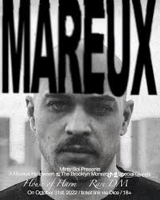

gorillaz
Gorillaz es una banda virtual inglesa creada en 1998 por Damon Albarn y Jamie Hewlett. La banda está compuesta por cuatro miembros ficticios: 2-D, Noodle, Murdoc Niccals y Russel Hobbs.

Grupo favorito desde hace 5 años
Gorillaz es una banda virtual inglesa creada en 1998 por Damon Albarn y Jamie Hewlett. La banda está compuesta por cuatro miembros ficticios: 2-D, Noodle, Murdoc Niccals y Russel Hobbs.
Grupo favorito desde hace 5 años
Mareux es el nombre artístico del artista estadounidense de darkwave Aryan Ashtiani. Nacido en Los Ángeles, creaba música a la vez que trabajaba como paramédico
Grupo favorito desde hace 5 años
su música explora el escapismo, el romance y la melancolía, y a menudo se inspira en experiencias personales.

Grupo favorito desde hace 5 años